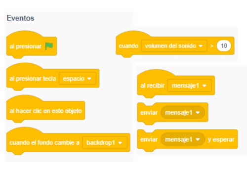
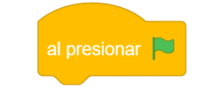
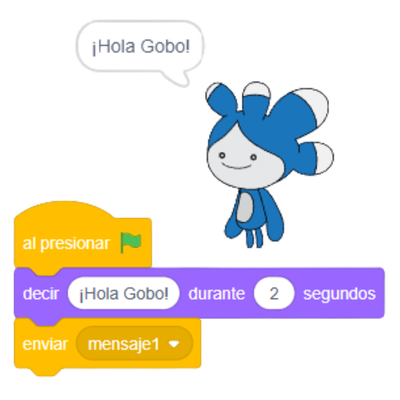
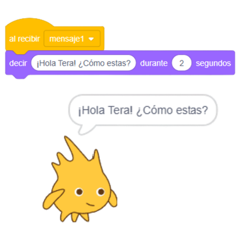
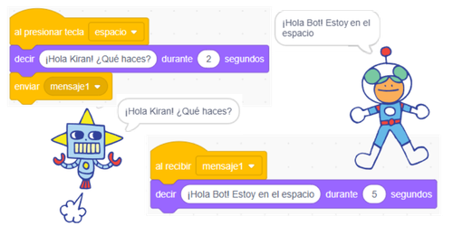

Los eventos permiten que un programa
ejecute acciones cuando ocurre algo específico, como presionar una tecla,
hacer clic en un objeto o recibir un mensaje.
En Scratch, los mensajes se utilizan para que distintos personajes
se comuniquen entre sí, coordinando acciones sin necesidad de que estén conectados
directamente por bloques.

Bloques de eventos y mensajes en Scratch
Los eventos más comunes en Scratch son aquellos que se activan
al presionar la bandera verde, al presionar una tecla
o al hacer clic sobre un objeto. Estos bloques indican el momento exacto
en el que inicia una acción.
Los mensajes permiten que un personaje envíe una señal a otros personajes
para que ejecuten instrucciones al mismo tiempo o en un orden específico,
favoreciendo el trabajo colaborativo dentro del programa.
Gracias a los mensajes, es posible sincronizar sonidos, movimientos,
animaciones y cambios de escenario sin que el código se vuelva repetitivo
o difícil de entender.
El uso adecuado de eventos y mensajes hace que los programas sean más
organizados, claros y fáciles de mantener, especialmente en proyectos
con varios personajes.
Actividad: Ordena eventos para crear una secuencia lógica
Al trabajar con eventos, es importante identificar claramente
qué acción inicia el programa y qué respuestas deben ejecutar
los personajes cuando reciben un mensaje.
Los eventos definen cuándo inicia una acción.
Los mensajes permiten la comunicación entre personajes.
Un mismo mensaje puede activar varios personajes al mismo tiempo.
El uso de mensajes evita repetir bloques innecesarios.
🎮 Eventos y Mensajes en Scratch
En este recurso aprenderás cómo los eventos y los
mensajes permiten que los personajes se comuniquen
y coordinen acciones dentro de un proyecto Scratch.
🟢 Nivel 1: Comprender el evento
Un evento indica cuándo debe iniciar una acción.
El evento más común en Scratch es:

Evento al presionar bandera verde
👉 Este bloque indica que el programa comienza cuando el usuario
hace clic en la bandera verde.
🟡 Nivel 2: Enviar y recibir mensajes
Los mensajes permiten que un personaje avise a otro
que algo ocurrió.

Enviar mensaje

Al recibir mensaje
✅ Cuando un personaje envía un mensaje, todos los que estén
escuchando ese mensaje ejecutan su código.
🔴 Nivel 3: Reto guiado – Conversación entre dos personajes
En este reto aprenderás cómo dos personajes pueden comunicarse entre sí
utilizando mensajes, simulando una conversación sencilla.
Trabajaremos con dos personajes:
🧑 Personaje 1: inicia la conversación.
🤖 Personaje 2: responde cuando recibe el mensaje.
👉 Observa que la ejecución al iniciar se controla directamente con una tecla.
El resto de programa ocurre gracias a los eventos y mensajes.
Paso 1: Iniciar el programa
En el Personaje 1, agrega el siguiente evento:
al presionar la barra espaciadora o tecla espacio
Debajo del evento, programa el bloque:
enviar mensaje → "¡Hola Kiran! ¿Qué haces?"
✅ Esto indica que el Personaje 1 (Robot) inicia la conversación.
Paso 2: Responder al mensaje
En el Personaje 2, agrega el bloque:
al recibir → "mensaje 1"
Debajo de ese bloque, programa una acción, por ejemplo:
decir "¡Hola Bot! Estoy en el espacio" por 2 segundos
💡 Nota: El mensaje debe llamarse exactamente igual en ambos personajes.
Paso 3: Continuar la conversación
Ahora el Personaje 2 enviará una respuesta.
enviar mensaje 2 → "respuesta"
En el Personaje 1, agrega:
al recibir mensaje 2 → "respuesta"
decir "¡Estoy bien, gracias!" por 2 segundos
Resultado esperado
🎯 Al presionar la tecla espacio:
El Personaje 1 envía un saludo.
El Personaje 2 responde al recibir el mensaje.
La conversación se completa sin usar teclado ni clics.

Conversación entre personajes usando mensajes
✔ Si la conversación ocurre en orden, comprendiste correctamente
el uso de eventos y mensajes.
Ahora abre un nuevo proyecto en Scratch y replica este comportamiento con otros personajes y continua explorando el uso de mensajes y eventos.